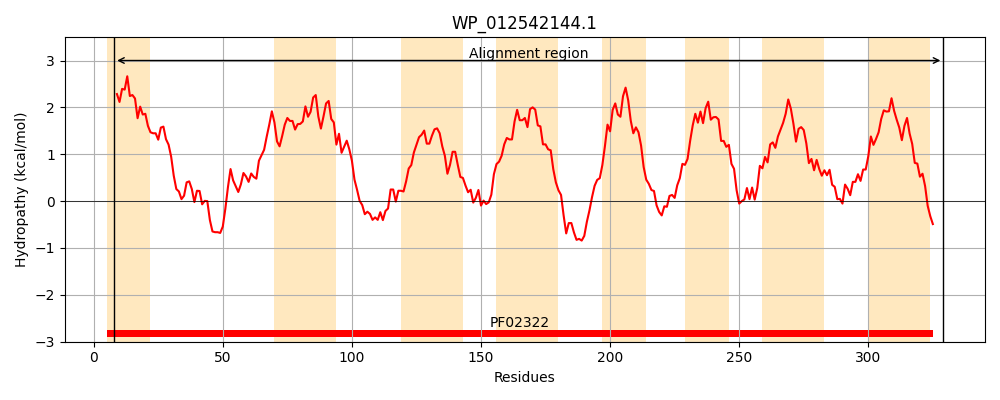
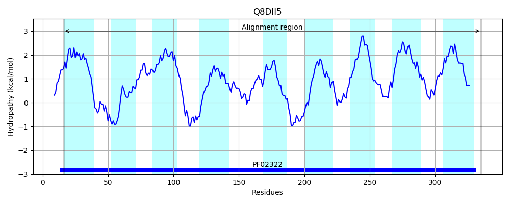
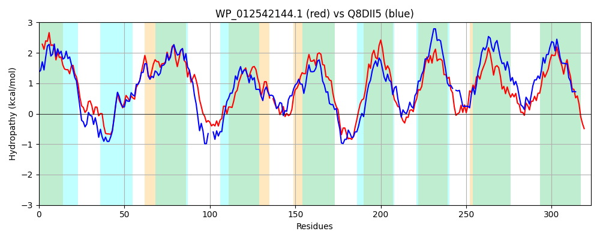

Hit Accession: Q8DII5
Hit TCID: 3.D.4.3.4
Hit Description: gnl|BL_ORD_ID|16001 gnl|TC-DB|Q8DII5|3.D.4.3.4 Cytochrome oxidase d subunit II OS=Thermosynechococcus elongatus (strain BP-1) GN=cydB PE=4 SV=1
Mach Len: 323
e:0.000000
Query TMS Count : 8
Hit TMS Count: 9
TMS-Overlap Score: 7.650000
Predicted Substrates:CHEBI:5584;hydron
BLAST Alignment:
Score: 628 , Bit scores: 246 bits, E-value: 7.4e-80, Alignment length: 323, Percentage identity: 41
Query: 8 IWFVIIVFATLMYIVMDGFDLGIGMLFSVVHDGEERDVMVNSVAPVWDGNETWLVLGGAGLFGAFPLAYAVITDALVIPLTAMLIGLIFRGVAFEFRFKAVPSHRTFWDYAFAGGSLLATFSQGIVVGAFINGFAV-ADRRFAGSTLDWLTPFNLFCGLGLVVAYLLLGTTWLIMKSEGALQQRMRELTRKVLLALMVVIAVVSVWTPLGWRYVAERWFTLPNFFWFVPVPILVLALSLWIWRLSARPASHARPFILTLGLIFLGFSGLGISVWPNIIPPNISLWDAAAPPSSQVFMLPGALLIIPVILMYTAWSYYVFRGKV 329
+WF I+ +YI++DGFDLGIG+L + R++++ S+ VWD NETWLVL G LFGAFPLAYA I +AL +P M++GLI R V+FEFR A +++ W+ AF GS LA QG VG G V A FAG DWLT +L L L+ Y+L+G+T+LI K+ G LQQ + ++++ P+ + + F P F+ F +P+L + L + R S + P + T L L F GLG ++PNIIPP++++++A+A PS+QVFML +IP++L Y ++Y VFRGKV
Sbjct: 16 VWFFILGLFLFLYILLDGFDLGIGILSLTSSNERRRNILMTSLGNVWDANETWLVLMGGSLFGAFPLAYATILNALYLPAVIMVVGLILRAVSFEFRENA--NNKRVWNLAFGIGSFLAALGQGFAVGTVFEGIKVDAAGHFAGGIWDWLTWHSLLVALTLIQGYVLIGSTYLIYKTTGELQQTHYRTATIAAWTTFIGAVLITITAPIFHEQLRAQLFQPPLFYIFAAIPLLGVLLIFLLLR-SLQKREEVMPLVWTFLLFLLSFIGLGFVIFPNIIPPSVTIYEASASPSAQVFMLIFVAFLIPIMLAYNLYNYLVFRGKV 335 | Protein Hydropathy Plots: |
|---|
|  |  |
Pairwise Alignment-Hydropathy Plot:
|
|---|
|  |